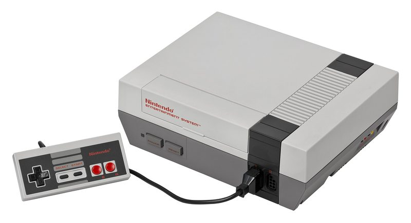
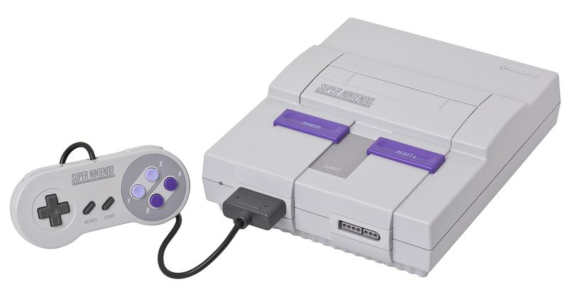

The 8 & 16-Bit Era (1985–1995)
After the crash of 1983, many stores in North America did not want to sell video games at all. Nintendo changed that with the NES, and a few years later Sega challenged Nintendo with faster 16-bit hardware. The rivalry that followed became known as the first “console war.”

Nintendo Entertainment System (NES)
Released: 1985 | Maker: Nintendo
The NES first came out in Japan in 1983 as the Famicom. For its American launch, Nintendo included a small robot accessory called R.O.B. so stores would see the system as a toy instead of another video game console. Games like Super Mario Bros. and The Legend of Zelda made the NES a hit, and Nintendo sold about 62 million units worldwide.

Sega Genesis
Released: 1989 | Maker: Sega
The Genesis (called the Mega Drive outside North America) was a 16-bit console, which meant sharper graphics and faster games than the NES. Sega marketed it as the cooler choice, with ads that said “Genesis does what Nintendo doesn't.” In 1991, Sega introduced Sonic the Hedgehog, a fast-moving mascot built to compete with Mario.

Super Nintendo Entertainment System (SNES)
Released: 1991 | Maker: Nintendo
Nintendo answered with its own 16-bit console. The Super Nintendo had a richer color palette, better sound, and a graphics feature called Mode 7 that could rotate and scale backgrounds to fake a 3D effect, as in F-Zero and Super Mario Kart. It sold about 49 million units worldwide.
Console photos from Wikimedia Commons.
Next stop: the 3D Revolution.